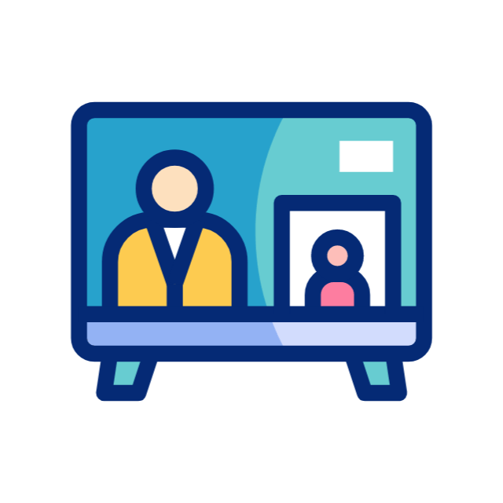
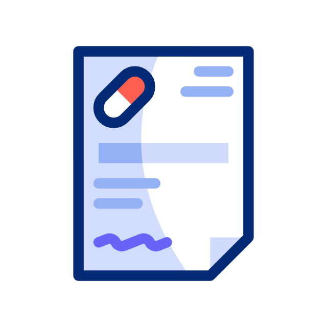
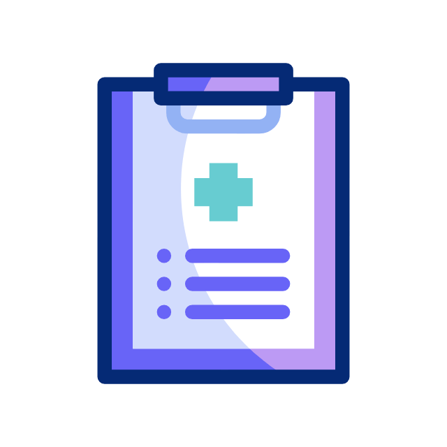
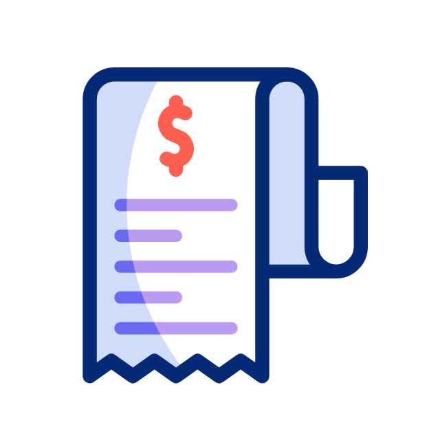
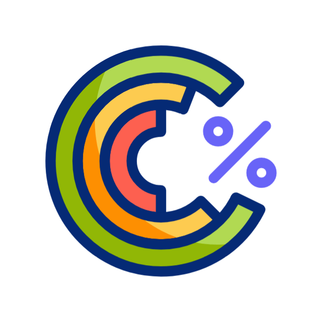
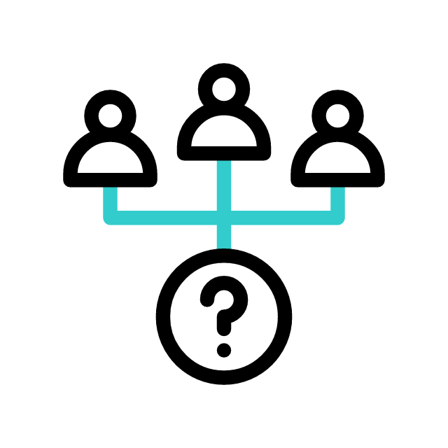
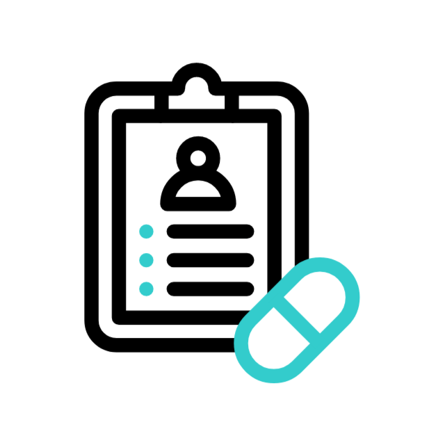
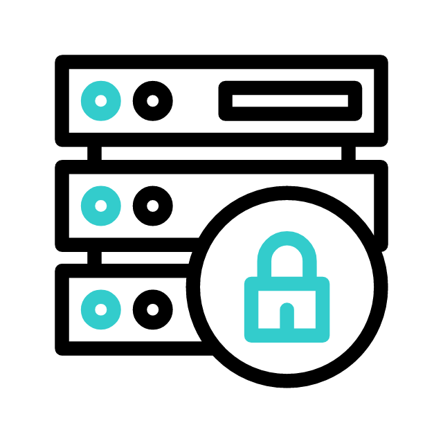

আধুনিক চিকিৎসা সেবার ডিজিটাল রূপান্তর
ক্লিনিক ও মাল্টি-ডাক্তার ম্যানেজমেন্ট
একটি ক্লিনিকের অধীনে একাধিক ডাক্তার এবং তাদের শিডিউল একসাথে ম্যানেজ করার শক্তিশালী সিস্টেম।
স্মার্ট অ্যাপয়েন্টমেন্ট সিস্টেম
রোগীরা সহজেই সিরিয়াল দিতে পারবেন এবং ডাক্তার বা তার সহকারী অ্যাপয়েন্টমেন্ট শিডিউল ম্যানেজ করতে পারবেন।

রিয়েল-টাইম সিরিয়াল ডিসপ্লে
ওয়েটিং রুমে থাকা রোগীরা স্ক্রিনে রিয়েল-টাইমে তাদের সিরিয়াল আপডেট এবং বর্তমান রোগীর অবস্থা দেখতে পারবেন।

স্মার্ট অনলাইন প্রেসক্রিপশন
ডাক্তাররা খুব দ্রুত এবং স্মার্টভাবে অনলাইন প্রেসক্রিপশন লিখতে পারবেন যা পেশেন্টরা সাথে সাথেই পাবেন।
প্রেসক্রিপশন টেমপ্লেট
কমন রোগের প্রেসক্রিপশনগুলো টেমপ্লেট হিসেবে সেভ করে রাখার সুবিধা, যাতে কয়েক সেকেন্ডেই প্রেসক্রিপশন তৈরি করা যায়।
AI মেডিসিন সাজেশন
প্রেসক্রিপশন লেখার সময় আর্টিফিশিয়াল ইন্টেলিজেন্স (AI) এর মাধ্যমে স্বয়ংক্রিয়ভাবে সঠিক ঔষধের সাজেশন পাওয়ার সুবিধা।

কাস্টম প্রেসক্রিপশন ডিজাইন
ডাক্তার বা ক্লিনিক তাদের পছন্দমতো প্রেসক্রিপশনের ফরম্যাট এবং লেআউট ডিজাইন করে নিতে পারবেন।

বিলিং ও ইনভয়েসিং
ডাক্তার এবং ক্লিনিক উভয়ের জন্য পেশেন্ট ভিজিট এবং অন্যান্য সার্ভিসের বিস্তারিত বিল ম্যানেজমেন্টের সুবিধা।

টেস্ট-ওয়াইজ কমিশন সেটআপ
ক্লিনিকের বিভিন্ন প্যাথলজি বা ডায়াগনস্টিক টেস্টের বিপরীতে ডাক্তারদের কমিশন স্বয়ংক্রিয়ভাবে হিসাব করার সুবিধা।

স্টাফ ম্যানেজমেন্ট
রিসেপশনিস্ট, অ্যাসিস্ট্যান্ট এবং অন্যান্য স্টাফদের অ্যাক্সেস কন্ট্রোল এবং ডিউটি ম্যানেজমেন্ট।

পুরানো প্রেসক্রিপশন রেকর্ড
রোগীর পূর্বের সকল প্রেসক্রিপশন এবং চিকিৎসার ইতিহাস অনলাইনে যেকোনো সময় দেখার সুবিধা।

সম্পূর্ণ গোপনীয়তা ও নিরাপত্তা
পেশেন্টদের সকল মেডিকেল ডেটা এবং প্রেসক্রিপশন রেকর্ড সম্পূর্ণ এনক্রিপ্টেড এবং সুরক্ষিত থাকে।